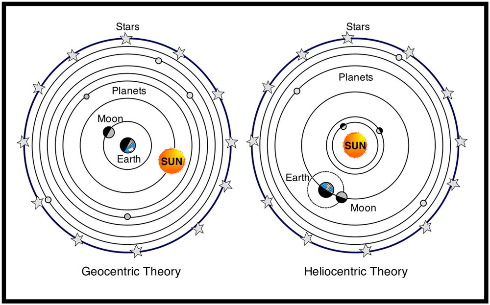

Is Earth actually in the center of our Solar System?
Claudius Ptolemaeus, a roman astrologer, proposed a geocentric model in the second century BC. The model suggested that the Earth was in the centre of the solar system and there was a perfect circular motion. This model was referred to another 14 centuries. This model is also known as the Ptolemaic model.
However, in the 16th century, a new model named the heliocentric model was created by Nicolaus Copernicus which suggested that the sun was in the center of the solar system and showed the proper order of the planets outwards/ around the sun. This model is also known as the Copernican model.
Discoveries Done By Famous Astronomers
Disoveries By Galileo Galilei, an Italian scientist: 1) Moon was not smooth unlike Earth. 2) He was able to measure the length of the mountains on Moon using the shadow of the mountains on Earth. 3) Every moving planet has its own moons/ satellites. 4) He discovered the 4 moons of Jupiter – Lo, Europa, Callisto and Ganymede. 5) Moon and Venus both have phases (which is how much they show in night) 6) He discovered the beautiful rings around Saturn using his own telescope.
Kepler's Laws
Another astronomer, Johannes Kepler loved the Copernicus model.
He was fond of making numerical relationships between the objects in the solar system.
He invented the Kepler’s laws which are used today by many astronomers.
There are 3 laws and they suggest that:
1) All the planets revolve around the sun in elliptical orbits, having the sun at one of the foci.
Also, the sum of the distance of any point on the orbit from the first and the seconds foci is the same. The first foci is the sun.
2) The law of equal areas - The areas of the radius vector from the foci which is the sun is equal in the same amount/ length of time.
At A1, the velocity of the planet will be greater than the velocity of the planet at A2 because it is closer to the sun. This is because there is an equation which gives this,
and it shows the distance between the sun and the planet is inversely proportional to the velocity.
Also, the area of A1 and A2 will be the same as the width of A1 is greater, whereas, the length of the A2 is greater.
Thus, it balances and the area comes to be the same.
3) The square of the periods of revolution in Earth years is directly proportional to the cube of the mean of the distance between the sun and the planet.
So,
p^2/ d^3 = k (constant)
Therefore, for every planet, regardless of the time it takes to revolve around the sun and its distance from the sun, the constant which is the ratio as shown above will be the same.
Discovery Of New Planets
In the 18th century, William Herschel discovered Uranus which is beyond Jupiter and Saturn.

Early in the 19th century, Adams and leVerrier thought that there must be another planet beyond Uranus which is producing small gravitational disturbances in the Uranus orbit.
Johann Gottfried Galle found the planet and named it Neptune.